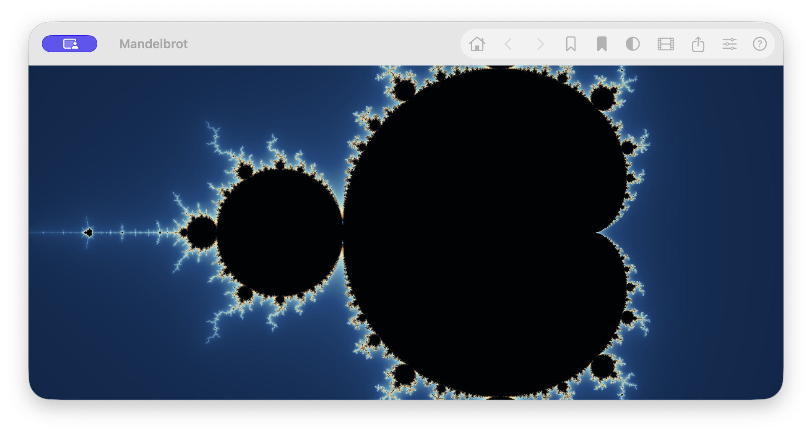
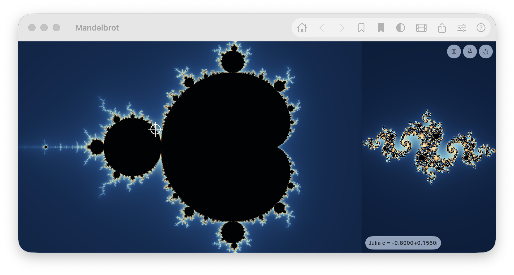
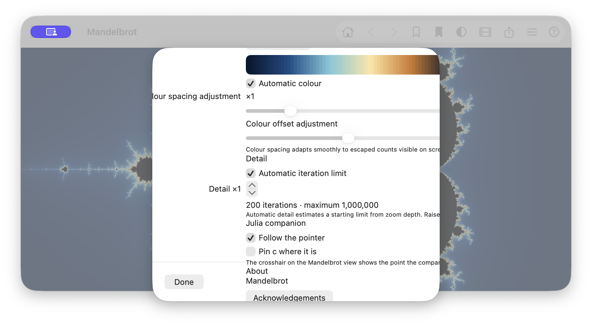
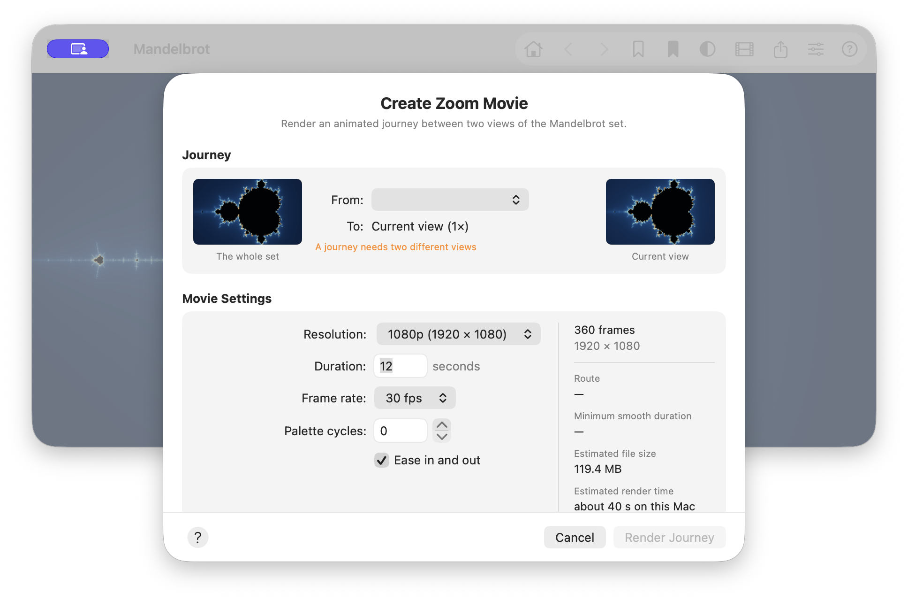

Mandelbrot — UI/UX audit
Independent source-and-runtime review of the Mandelbrot/Julia explorer, its navigation, saved locations, rendering controls and movie workflow.
Executive summary
The core instrument is compelling. The full-bleed canvas, clean rendering and live Julia relationship make mathematical exploration feel immediate rather than technical. The strongest designed surface is the macOS movie sheet: it explains the task, makes endpoints visible and retains progress in context. The largest weakness is not visual style but product framing: important spatial state (zoom and coordinates), export, save feedback and first-run discovery are absent or buried. The Mac also has a serious layout defect in its generic Settings sheet: content is visibly clipped.
| Priority | Count | Theme |
|---|---|---|
| P0 | 1 | macOS Settings clips controls and explanatory text. |
| P1 | 10 | Spatial orientation, discovery, feedback, export, native presentation, accessibility and cross-platform parity. |
| P2 | 9 | Terminology, toolbar grouping, continuity, density and resilience. |
Application map and audit coverage
| Area | Evidence | Finding status |
|---|---|---|
| Explorer canvas; pan, zoom, rotate, reset, history | Mac runtime + ViewerView, PlatformInput, ExplorerModel | Observed/source |
| macOS toolbar, Explore commands, keyboard shortcuts | Mac runtime + ContentView, ExplorerCommands | Observed/source |
| iPhone floating control cluster; compact Julia inset | Live launch capture + ContentView | Observed/source |
| Julia marker, pin, swap and companion gestures | Mac runtime + CompanionPanel, JuliaMarker | Observed/source |
| Places, bookmark creation/deletion, share links | PlacesView, LocationStore | Source; not freshly exercised |
| Settings, acknowledgements, Controls, developer panel, benchmarks | Settings runtime + view source | Mixed |
| Movie configuration, preview, render progress, result/share | Mac configuration runtime + MovieSheetMac, MovieView, MovieRenderer | Mixed; no fresh render |
| Error, precision-limit, tile failure, cancellation and first run | ContentView, renderer/model source | Source only |
Screen review
Explorer and navigation


- Strength. The canvas owns the interface. Native materials and the absence of permanent panels let the fractal remain the visual hero.
- Strength. The input architecture deliberately gives the canvas the whole drawable area, while controls sit over it. Pan, zoom and rotation are coordinated rather than competing gestures; iPhone uses a single two-touch transform, and Mac handles trackpad, scroll, drag, framing and keyboard paths.
- Problem — P1. There is no persistent scale or coordinate readout. A user cannot tell where they are after a deep zoom without opening Places, which covers the image they are trying to identify.
- Concern — P2. Locations apply as a hard cut; source shows history is recorded only after settling. The app has a strong spatial premise, so restoring a place should preserve continuity when Reduce Motion permits.
Recommendation: Add a quiet, tappable zoom capsule on iPhone and a window subtitle or unobtrusive lower-leading readout on Mac. Reveal copyable coordinates on demand; animate restoring a saved place with a short camera transition, with a non-motion fallback.
Toolbar, commands and discoverability
- Strength. Toolbar actions have explicit labels, help text and accessibility identifiers;
HelpContentcentralises the explanation associated with each icon. - Concern — P1. The Mac toolbar puts adjacent outline and filled bookmark glyphs beside each other, but they are different commands: Places vs save current view. Filled/outline normally signals state, inviting a mistaken toggle interpretation.
- Concern — P1. iPhone exposes reset, Places, Julia, movie, settings and help, but not direct Bookmark or Share. Both actions are therefore substantially more expensive on the platform where sharing is most natural.
- Concern — P2. Conditional Back/Forward/Upright items change the icon positions. Equal visual treatment also hides the distinction between navigation, library, companion and export tools.
Recommendation: Group Mac navigation separately, use a gallery/library glyph for Places, and make bookmark stateful. Reserve the Back location on iPhone; add Bookmark and Share or collapse infrequent Settings/Help into an overflow action.
Julia companion

- Strength. This is the application’s most delightful explanatory feature. The crosshair, c caption and concurrent Julia result make an advanced relationship concrete.
- Concern — P1. The companion’s three small icon controls are visually subtle and source exposes all children under the same container accessibility label. On a compact phone, fixed 26 pt controls and the long c caption compete with the preview.
- Concern — P2. The side-by-side split is fixed; a drag-adjustable Mac divider would let users choose whether the explorer or companion leads.
Recommendation: Give each child an individual semantic label, raise compact target sizes toward 44 pt, cap caption text at accessibility sizes, and make the Mac split adjustable. Keep the crosshair’s directness—it is the right conceptual bridge.
Places, bookmarks and share
- Strength. Places combines the current location, named saves, built-in gallery and deep-link sharing in one understandable model.
- Concern — P1. Source shows no explicit empty state, success acknowledgement, rename path or Mac-specific deletion affordance; saving from the toolbar is silent.
- Problem — P1. Sharing exports a custom
mandelbrot://link only. There is no in-app still-image export flow, despite the app being designed to reveal images worth keeping.
Recommendation: On save, show “Saved to Places” with Undo and optional name. Give Places thumbnails using the existing thumbnail renderer, an empty-state explanation and a context menu on Mac. Add a rendered still to Share alongside a universal/deep link.
Settings and help


- Problem — P0, systemic. Settings uses a narrow fixed
NavigationStack/Formsheet on Mac. The palette control, labels and long help text extend beyond the panel; the only dismissal is a leading Done button. This prevents use of the app’s only colour/detail configuration. - Concern — P1. “Automatic iteration limit”, “Detail”, “Colour spacing adjustment”, “Pin c” and the advanced rendering vocabulary are powerful but under-explained for a casual explorer. The sliders do not consistently show a current value and bounds together.
- Strength. Standard Form controls make the sections structurally legible and are naturally suited to iPhone’s scrolling sheet presentation. Controls help also describes direct gestures rather than merely listing icons.
Recommendation: Make macOS Settings a proper Settings scene or sizeable panel with a scrolling body and conventional trailing action. Establish one labelled slider/stepper pattern: title, readable live value, endpoint meaning and short plain-language description. Use platform wording (“finger”/“tap” on iPhone).
Zoom Movie

- Strength. The Mac sheet is purposeful: endpoint thumbnails, journey explanation, minimum-duration safety, live preview infrastructure, output destination, statistics, render phase and completion card are all represented in source. The disabled Render Journey state correctly communicates that identical endpoints cannot form a journey.
- Concern — P1.
MovieViewon iPhone is materially reduced: no endpoint thumbnails, route editor, preview, output information, completion summary or same duration guard. This is not merely platform adaptation; it is a different capability. - Concern — P1. The output estimate is presented prominently but there is no visible uncertainty framing. Render failure/cancel completion needs real-world validation before it is relied on.
Recommendation: Share the Journey model, formatted scale, endpoint presentation, duration validation and result summary across platforms; adapt layout, not capability. Preserve Mac’s phase-aware footer and apply a focused phone version with a clear result/share state.
Rendering, errors and boundary states
- Strength. Source includes clear mechanisms for automatic depth, precision limit notices, tile failure retry, movie progress and cancellation. The app does not abandon the user during expensive work.
- Concern — P1. The full-screen error overlay and text-only transient notices have weak action affordance;
locationErroris dismissed by tapping its message, an undiscoverable convention. - Concern — P2. No first-run onboarding or empty-state story is visible. The sophisticated gestures and domain terms require discovery help before a user is already lost.
Recommendation: Use compact notices with an explicit close button, a clear retry/cancel action and human wording. On first launch, show a skippable two-step gesture hint built from the existing Help content.
Workflow review
Explore → refine → return
The direct-manipulation stack is excellent and history is a valuable recovery route. The missing scale/coordinate readout is the workflow’s central gap: the user can explore effectively but cannot name or confidently recover the place they found. Add visible spatial state and continuous restore transitions.
Interesting place → bookmark → restore
Conceptually sound but too quiet. The Mac toolbar provides a fast save, while iPhone requires Places; neither path offers enough confirmation. A saved thumbnail, confirmation with Undo, stable “current place” state and a platform-appropriate deletion/rename affordance would turn this into a reliable library workflow.
Mandelbrot → Julia
Exceptional conceptual continuity: the marker, c readout and live companion make the relationship understandable. Improve ergonomics, accessibility semantics and compact-size protection, but do not replace the direct marker interaction with a form.
Movie → render → share
The Mac implementation has the ingredients of a strong creative workflow. The phone implementation is currently an abbreviated control form rather than the same journey expressed compactly. Still image export is absent from both workflows and should precede embellishment.
Cross-platform, accessibility and design-system findings
- Appropriate variation: Mac toolbar versus iPhone material capsule; Mac output folder versus iPhone share; side-by-side versus inset Julia companion; Mac trackpad versus iPhone touch transform.
- Unjustified divergence: movie planning/preview/result, direct bookmark/share access, and scale formatting/copy. Share model and state; vary presentation.
- Accessibility — source + Mac AX observation: iPhone canvas has only the label “Mandelbrot explorer”, and Mac canvas is not exposed as a meaningful adjustable object. Neither supplies a live coordinate/scale value or actions to explore without a gesture. Julia child controls inherit a duplicate container label. Reduce Motion is not consulted in the visible UI source.
- Systemic cause: generic Form/sheet composition works on iPhone but is not sufficiently specialised for macOS. Separately, user-facing scale formatting lives in several local expressions rather than one shared formatter.
Prioritised recommendations
P0 — Critical
- Rebuild the macOS Settings presentation: a resizable Settings scene or properly sized panel, scrolling content, no clipped control rows, and conventional dismissal/action placement. This is a blocking settings defect.
P1 — Important
- Add persistent zoom plus on-demand copyable coordinates to both explorers.
- Add first-class image export and share a rendered visual with a location link.
- Make bookmark creation discoverable on iPhone and acknowledge saves everywhere.
- Unify shared movie capability and completion feedback across platforms.
- Make canvas and Julia controls semantically accessible; add adjustable zoom/custom pan actions and usable compact targets.
- Replace custom-scheme-only sharing with a broadly usable link strategy.
- Give Places an empty state, thumbnail-backed saved locations, rename and Mac context actions.
- Use platform-specific language and sheet conventions; add Mac Settings… / ⌘,.
- Make error/progress feedback explicitly dismissible and actionable.
- Define one slider/stepper and one zoom-formatter convention.
P2 — Polish
- Stabilise conditional toolbar positions and group control families.
- Animate restored places while honouring Reduce Motion.
- Make the Mac Julia split adjustable; protect captions and controls at large text.
- Clarify “Detail”, palette adjustment and c terminology with short user-facing descriptions.
- Offer a first-run gesture primer and surface shift-drag framing/less common gestures contextually.
- Audit localisation resilience of fixed label gutters and captions.
- Add visible estimated time range and post-cancel/failure validation to movie rendering.
- Persist last useful location per scene.
- Improve marker contrast against light fractal regions.
Suggested next pass
- Fix the Mac Settings scaffold and establish shared value/scale formatting conventions.
- Add spatial state, bookmark feedback and the first-run primer.
- Build still-image export and improve share payloads.
- Unify movie models and phase/result feedback, then lay them out naturally per platform.
- Perform accessibility, Dynamic Type, Reduce Motion, localisation and failure-state validation.
Limitations and verification
Freshly exercised: macOS launch, toolbar, Settings, Julia companion and movie configuration; iPhone simulator launch and renderer completion. Fresh captures are all adjacent to this report. The simulator’s native GUI application was not available in this environment, so iPhone modal, gesture, rendering-progress and accessibility states were reviewed from source rather than individually driven. I did not freshly exercise export completion, tile failure, precision limit, cancellation, empty bookmarks, deletion, developer tools or benchmarks. Those limits are deliberate evidence boundaries, not claims about runtime behaviour.
Source was unchanged. This report is newly written; no material from other reviews/ directories informed it.